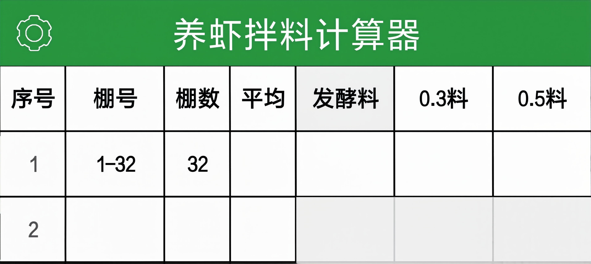
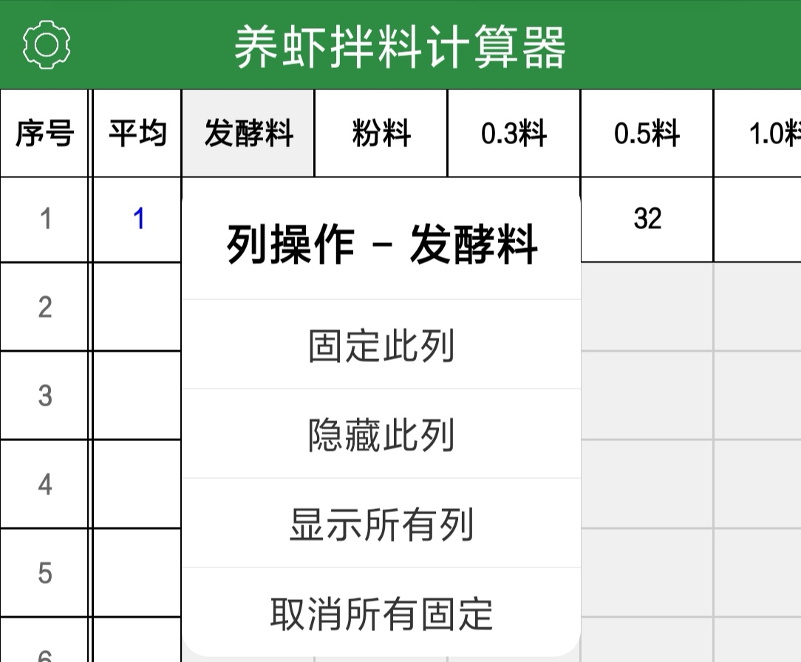
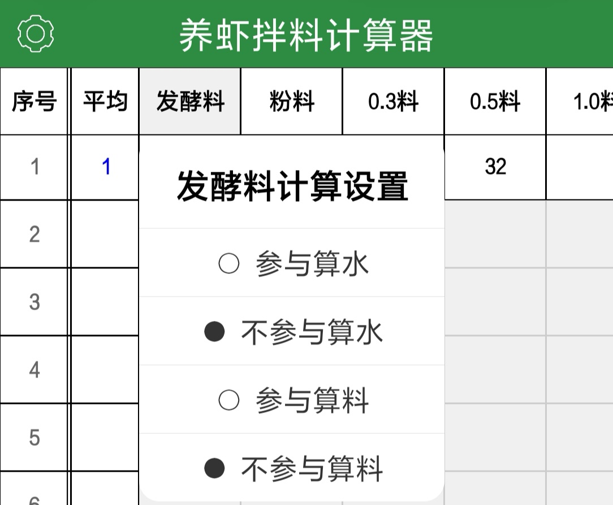
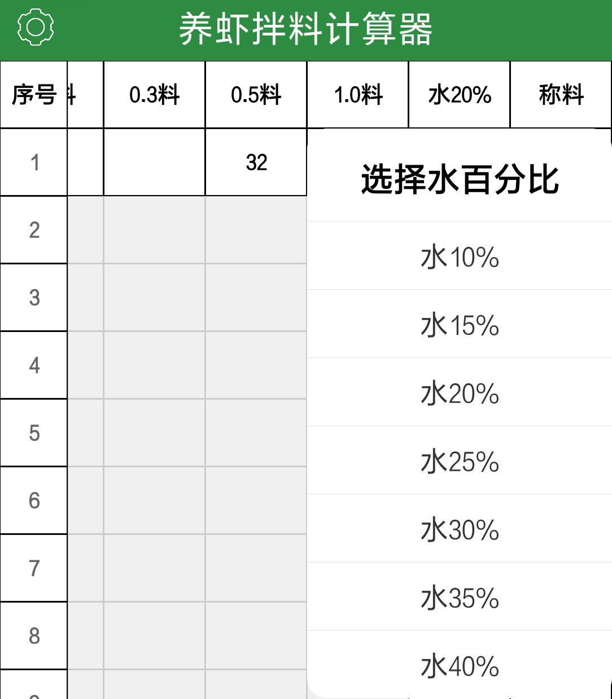
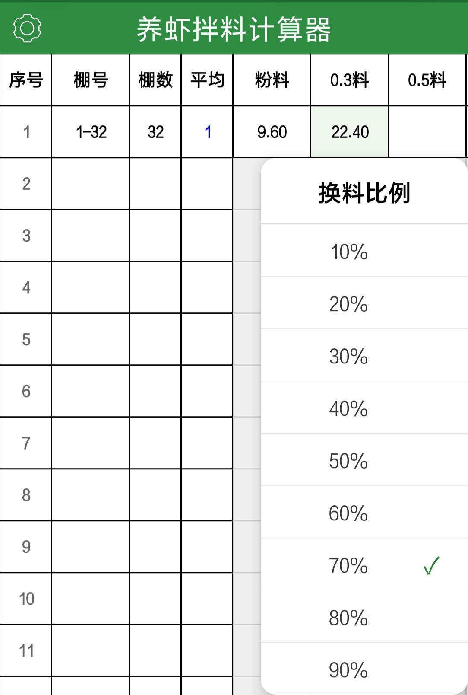
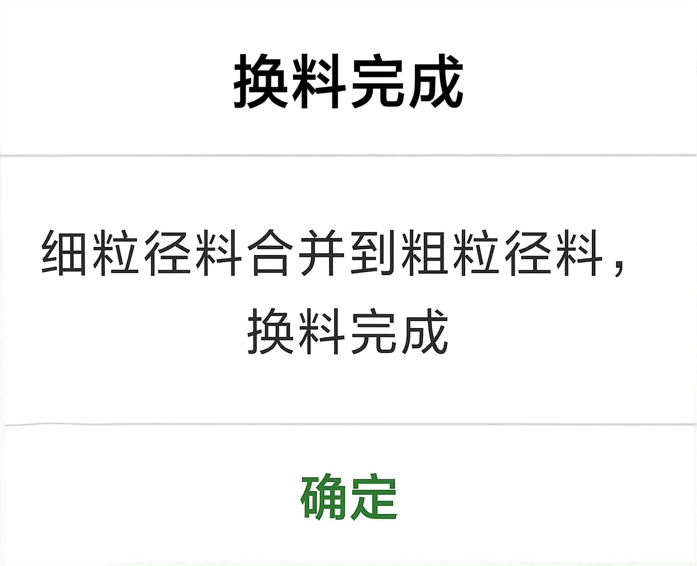

首行棚号单元格填写区间（最小号-最大号），示例：1-40、1到40、1至40。
吃料不同的棚号另起一行，多棚号可用空格、逗号、顿号隔开。

填写棚号信息，连续棚号填写范围，吃料不一样的棚单独另起一行录入。

列操作：可固定、隐藏表格列，按需调整表格显示，方便手机小屏幕查看。

发酵料设置：设置当前行发酵料是否参与算水、算料。

选择拌料含水率，根据拌料需求选择对应的加水比例。

设置换料过渡比例，用于虾料逐步替换时计算用量。

手动清除细粒径料单元格数据后，系统自动将细粒径数据并入粗粒径单元格，自动完成换料。